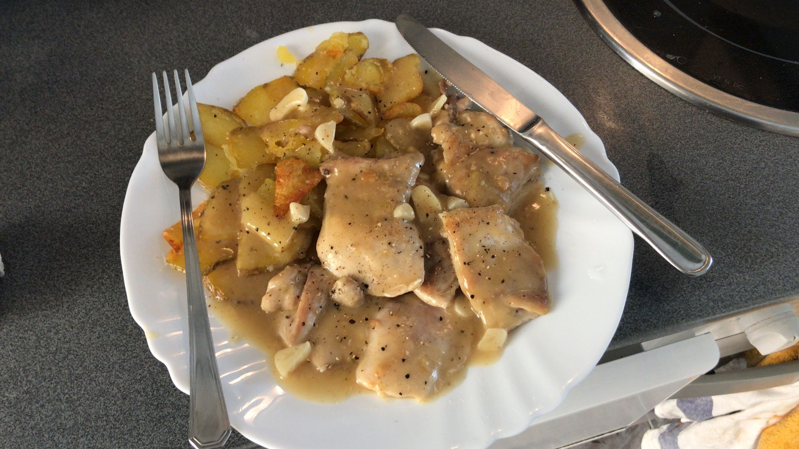

Rara al ajillo

Descripción
Un delicioso plato de galga al ajillo. Cuidado con los huesos!
Ingredientes
- Una rara
- Harina
- 4 dientes de ajo
- Caldo de pollo
Pasos
- Corta a la rara, cubre los trozos con harina, y fríe hasta que estén dorados
- Saca los trozos, deja que reposen. Mientras, sofríe unos ajos hasta que doren, añade caldo de verduras.
- Vuelve a añadir a la rara a la salsa. Añade harina para que espese.
- Sirve junto con patatas fritas. Disfruta!